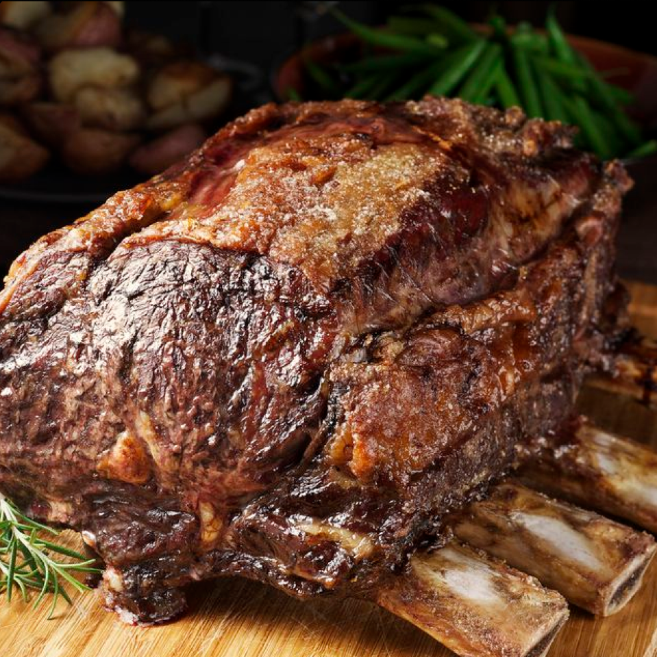

The Prime Rib Roast is a classic and tender cut of beef taken from the rib primal cut. Learn how to make the perfect prime rib roast to serve your family and friends. Check out What’s Cooking America’s award-winning Classic Prime Rib Roast recipe and photo tutorial to help you make the Perfect Prime Rib Roast.


 5 HR
685
5 HR
685
 107
107